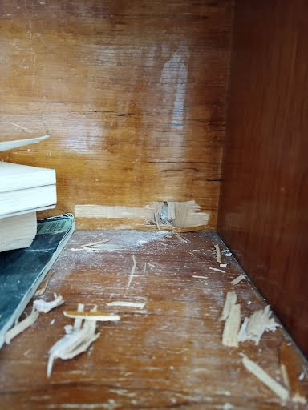
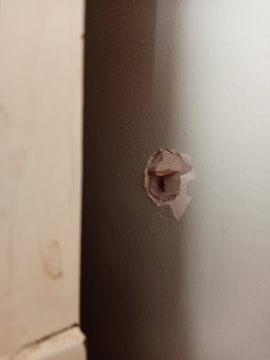
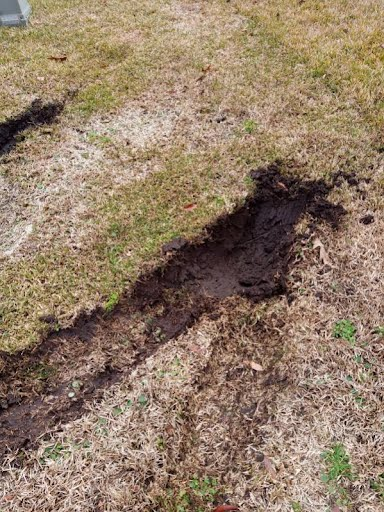

Why I built STVR Doorman
I personally lived next door to one of the worst of the worst of party houses. We experienced lawn damage and trespassing, along with loud late-night parties that extended into the early morning hours.
During one violent shooting, my home and the homes and cars of two other neighbors were struck by numerous bullets. My mother and our dog were nearly struck by bullets while inside what should have been the safety of our own home. There were at least two active shooters, and around 40 rounds were fired. Airbnb's insurance provider has yet to pay for any of the damages.
That is why I want to expose the impact party houses can have on their neighbors. I built this tool to help people understand short-term rental activity and document concerns. This is my personal account and motivation; it does not claim any "party house" listing on this map is likely to have a party this bad.
What neighbors experienced


